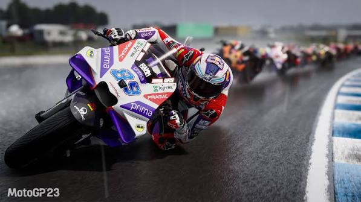

Football
Football is indisputably the world's most popular sport, captivating billions of passionate fans across every continent. The game bridges cultural divides, creating a universal language spoken on elite stadium pitches and dusty neighborhood streets alike.
At its core, the beauty of the sport lies in its fundamental simplicity. Two teams, one ball, and ninety minutes of strategic drama are all it takes to spark unforgettable moments of athletic brilliance.
Modern football relies on sophisticated tactical evolution, transforming the game into a high-speed chess match. Managers constantly innovate with complex pressing systems, fluid positional rotations, and intricate counter-attacking strategies to outsmart their opponents.
Beyond the tactics, elite physical conditioning has reached unprecedented heights. Today's players are highly optimized athletes, blending explosive sprinting power, exceptional spatial awareness, and precise technical skills under immense pressure.
The sport also serves as a massive economic engine, driving global media rights, blockbuster player transfers, and commercial partnerships. High-profile domestic leagues and prestigious international tournaments dominate sports headlines and capture global attention year-round.
Ultimately, football thrives because of its profound emotional connection to the people. The shared joy of a last-minute winning goal binds communities together, ensuring the sport remains an unmatched global phenomenon.
Motorsport
Motorsport represents the ultimate fusion of human skill, cutting-edge engineering, and raw speed. From the high-tech arenas of open-wheel racing to the punishing environments of off-road rallies, it captivates millions of fans globally.
The industry serves as a crucial testing ground for automotive innovation, driving advancements in aerodynamics, fuel efficiency, and hybrid powertrains. Technologies developed for the racetrack rapidly find their way into everyday consumer vehicles, shaping the future of transportation.

Data analytics and real-time telemetry have transformed modern racing into a highly calculated science. Engineering crews analyze thousands of data points per second to optimize car performance, tire management, and fuel consumption.
Beyond the machines, elite drivers endure extreme physical stress, battling intense G-forces and scorching cockpit temperatures for hours. Their rigorous training regimes focus heavily on cardiovascular endurance, neck strength, and split-second reaction times.
Pit stop execution highlights the intense team chemistry required to win championships, where fractions of a second decide races. Mechanics operate in perfect synchronization to change tires, adjust wings, and release cars back into live pit lanes safely.
As global environmental priorities shift, the sport continues to pioneer sustainable racing initiatives and alternative fuels. The rapid rise of electric and synthetic fuel championships ensures that high-speed competition remains relevant and forward-thinking.
MotoGP
MotoGP stands at the absolute pinnacle of two-wheeled motorcycle racing, showcasing the world's most talented riders on purpose-built prototype machinery. These custom-engineered bikes routinely surpass speeds of 360 kilometers per hour, pushing mechanical limits to the edge.
The sport demands extraordinary physical courage, as riders lean their bikes at impossible 64-degree angles through sharp corners. With only a few millimeters of rubber contacting the asphalt, precision throttle control and body positioning are absolutely critical.

Advanced electronics play a vital role in managing the immense power delivery of modern 1000cc four-cylinder engines. Sophisticated traction control, anti-wheelie software, and launch control systems help riders harness over 250 horsepower without losing control.
The introduction of complex aerodynamic winglets and ride-height lowering devices has radically altered modern MotoGP racing tactics. These innovations maximize downforce during acceleration, minimizing front-wheel lift while making overtaking an incredibly strategic art form.
Rider safety remains a paramount focus, prompting continuous evolution in protective gear, specialized track design, and runoff areas. Modern leather suits feature integrated intelligent airbag systems that deploy instantly before a rider even impacts the ground.
The championship calendar spans across historic global circuits, delivering fierce grid rivalries and dramatic tile battles every season. The intense, wheel-to-wheel action ensures that MotoGP remains one of the most thrilling spectacles in all of sports.
IMSA
The International Motor Sports Association (IMSA) anchors North American sports car racing, anchoring prestigious multi-class endurance events. Its unique format forces ultra-fast prototypes and production-based GT cars to share the exact same track simultaneously.
Navigating this multi-class traffic structure creates a constant, high-stakes game of chess for drivers throughout a race. Prototype pilots must aggressively slice through slower fields, while GT drivers must maintain their racing lines predictably.

The flagship WeatherTech SportsCar Championship features legendary endurance crown jewels like the Rolex 24 at Daytona and Twelve Hours of Sebring. These grueling events test the mechanical durability of components and the mental focus of teams to their limits.
IMSA’s top-tier GTP class showcases revolutionary hybrid powertrains, blending traditional internal combustion engines with standardized electric recovery systems. This platform attracts major global manufacturers eager to showcase their sustainable, high-performance technology.
Success in endurance racing hinges entirely on meticulous pit strategy, driver stint rotations, and adaptive problem-solving. Teams must execute flawless transitions during midnight driver changes, sudden weather shifts, and unexpected mechanical failures.
By balancing factory-backed professional programs with dedicated pro-am classes, IMSA maintains deep grids and highly competitive racing action. The close proximity of fans to the open paddocks creates an accessible, uniquely vibrant atmosphere for motorsport enthusiasts.